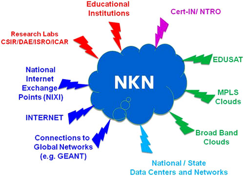

National Knowledge Network
The NKN is a state-of-the-art multi-gigabit pan-India network for
providing a unified high speed network backbone for all knowledge related
institutions in the country. The purpose of such a knowledge network goes to the
very core of the country's quest for building quality institutions with requisite
research facilities and creating a pool of highly trained professionals. The NKN
will enable scientists, researchers and students from different backgrounds and
diverse geographies to work closely for advancing human development in critical and
emerging areas.

Features:
NKN is designed as a Smart Ultra High Bandwidth network that seamlessly interconnects the leading Scientific and Technological institutions - which are pursuing world-class research and development. NKN design is inherently proactive; it takes into account the requirements that may occur in the near term and long term.
Some of the salient features of the NKN are:
- Establishing Connectivity for Knowledge and information sharing.
- Enabling Collaborative Research in emerging areas such as Climate Modeling.
- Facilitating distance education in specialized fields such as medicine, emerging high tech areas covering info-bio-nano technology.
- Facilitating an ultra-high speed e-governance backbone for information sharing.

NKN will also act as a test bed for research in the area of network, security and delivery models for various services. As NKN is a new initiative, it will leverage existing initiatives, to ensure faster roll out with modest investment.
Services:
NKN network is designed with the aim of providing:
- Highest level of availability
- Robust & reliable connectivity
- Highest level of Scalability (specifically planned to match the unknown future demands which cannot be envisaged currently)
- Best Bandwidth Capacity: For NKN, various National Long Distance Carriers (NLDs) have provided 1Gbps / 2.5Gbps capacity links which can be self-healed. Further, the NLDs are in process of upgrading (using DWDM) to 10Gbps or more connectivity.
The main services of NKN can be broadly categorized under the following heads:
- Generic Services:
Internet, Intranet, Network Management Views, e-Mail, Messaging Gateways, Caching Gateways, Domain Name System, Web Hosting, Voice over IP, Multipoint Control Unit (MCU) Services, Video Portals, SMS Gateway, Co- Location Services, Video Streaming etc.
-
Community Services:
Shared Storage, e-Mail List Software Application (LISTSERV), Authentication Service, EVO, Session Initiation Protocol (SIP), Collaboration Service, Content Delivery Service, International Collaborations with EU-India Grid, Global Ring Network for Advanced Applications Development (GLORIAD) etc.
-
Special Services:
Virtual Private Network Stitching Services [VPN@L2 (Virtual Private Wire Service / Virtual Private LAN Service), VPN@L3] etc.
URL:
Contact Details:
Program Implementation Unit (PIU)
National Knowledge Network
iNOC, National Informatics Centre (NIC),
A-Block, CGO Complex, Lodhi Road
New Delhi :- 110003
Tel: 011 :- 24360088
Fax: 011 :- 24361609
E-Mail :- piu@nkn.in